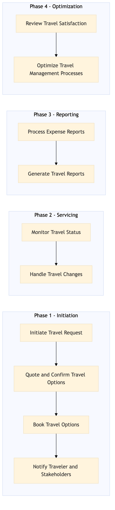

This process document outlines the VIP and Executive Travel Management for Expedia Group (OTA) and Amex GBT / SAP Concur (TMC). It covers the initiation, booking, servicing, and reporting phases of travel management.
| Trigger | A request for VIP or executive travel is received from a corporate client. |
| Outcome | Successful execution of travel plans with high satisfaction levels from VIP and executive clients, efficient use of resources, and accurate financial tracking. |
| Systems | SAP Concur T2 SAP Concur Expense Amex GBT Neo/Complete Expedia Open World Partner Central Amadeus NDC Sabre GDS Travelport Salesforce Tableau AWS SageMaker Snowflake Kafka SAP S/4HANA International SOS Cvent Amex Corporate Card VCN SAP Analytics Cloud Workday |

Click to enlarge
| Step | Name & Pain Point | Role | System | Input | Output | KPI | Flags |
|---|---|---|---|---|---|---|---|
| 1.1 | Initiate Travel Request Delays in request processing | Travel Manager | SAP Concur T2 | Travel request form with details (destination, dates, budget) | Travel request approved or declined | Request approval within 24 hours | ◆ Decision |
| 1.2 | Quote and Confirm Travel Options Inaccurate or unavailable quotes | Travel Manager | Expedia Open World, Partner Central, Amadeus NDC, Sabre GDS, Travelport | Approved travel request details | Selected travel options (flights, hotels, car rentals) | Quote generation within 48 hours | ◆ Decision |
| 1.3 | Book Travel Options Failed booking attempts | Travel Manager | Expedia Open World, Partner Central, Amadeus NDC, Sabre GDS, Travelport | Selected travel options | Confirmed bookings with payment details | Booking confirmation within 24 hours of selection | ⚠ Exception |
| 1.4 | Notify Traveler and Stakeholders Missed notifications | Travel Manager | Salesforce, Tableau | Confirmed bookings | Notifications sent to traveler and stakeholders | Notification sent within 1 hour of booking confirmation | ⚠ Exception |
| 2.1 | Monitor Travel Status Delayed status updates | Travel Manager | SAP Concur T2, Amadeus GDS | Confirmed bookings | Travel status updates (check-ins, check-outs) | Status updates within 1 hour of change | ◆ Decision |
| 2.2 | Handle Travel Changes Failed change requests | Travel Manager | Expedia Open World, Partner Central, Amadeus NDC, Sabre GDS, Travelport | Change requests (flight changes, hotel upgrades) | Updated travel plans with new costs | Change request resolution within 24 hours | ◆ Decision⚠ Exception |
| 3.1 | Process Expense Reports Delays in expense reimbursement | Finance Manager | SAP Concur Expense, Amex GBT Neo/Complete | Expense reports from travelers | Approved expense reimbursements | Expense report processing within 48 hours | ◆ Decision |
| 3.2 | Generate Travel Reports Inaccurate or incomplete reports | Travel Manager | SAP Analytics Cloud, Tableau | Travel data (bookings, expenses) | Travel reports and analytics | Report generation within 7 days of travel completion | ⚠ Exception |
| 4.1 | Review Travel Satisfaction Low response rates | Travel Manager | Salesforce, Tableau | Feedback from travelers | Actionable insights for future improvements | Satisfaction survey completion rate above 80% | ⚠ Exception |
| 4.2 | Optimize Travel Management Processes Resistance to change | Travel Manager, Finance Manager | AWS SageMaker, Snowflake, Kafka | Process data and insights | Improved travel management processes | Process optimization within 30 days of review | ⚠ Exception |